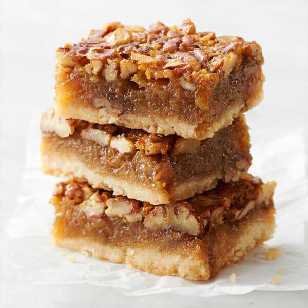

Pecan Pie Bars

Description
Pecan Pie in the of form small, delicious, and easy to make bars. A treat that children and adults of all ages can enjoy on a cold winter night.
Ingredients
- 1/2 cup white sugar
- 3 cups all-purpose flour
- 1/2 teaspoon salt
- 3 eggs
- 2 teaspoons vanilla extract
- 1 cup of corn syrup
- 1 cup butter
- 2 cups chopped pecans
Steps
- Preheat oven to 170 degrees C. Lightly grease a 10x15-inch jellyroll pan.
- stir the flour, 1/2 a cup of sugar and salt in a medium sized bowl. cut up 1/2 the cup butter into tiny little peices and scatter the mixture across the pan before applying pressure evenly.
- Bake for 15 minutes in the preheated oven.
- Prepare the filling while the crust is baking and mix together the eggs, corn syrup, 1 cups sugar, 3 tablespoons butter, and vanilla in a large bowl until smooth.
Stir in the chopped pecans. Spread the filling evenly over the crust as soon as it comes out of the oven.
- Bake for 25 minutes in the preheated oven. Allow it to cool completely off before slicing into bars.